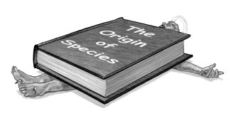

My God Problemby Natalie AngierIn the course of reporting a book on the scientific canon and pestering hundreds of researchers at the nation's great universities about what they see as the essential vitamins and minerals of literacy in their particular disciplines, I have been hammered into a kind of twinkle-eyed cartoon coma by one recurring message. Whether they are biologists, geologists, physicists, chemists, astronomers, or engineers, virtually all my sources topped their list of what they wish people understood about science with a plug for Darwin's dandy idea. Would you please tell the public, they implored, that evolution is for real? Would you please explain that the evidence for it is overwhelming and that an appreciation of evolution serves as the bedrock of our understanding of all life on this planet? In other words, the scientists wanted me to do my bit to help fix the terrible little statistic they keep hearing about, the one indicating that many more Americans believe in angels, devils, and poltergeists than in evolution. According to recent polls, about 82 percent are convinced of the reality of heaven (and 63 percent think they're headed there after death); 51 percent believe in ghosts; but only 28 percent are swayed by the theory of evolution. Scientists think this is terrible—the public's bizarre underappreciation of one of science's great and unshakable discoveries, how we and all we see came to be—and they're right. Yet I can't help feeling tetchy about the limits most of them put on their complaints. You see, they want to augment this particular figure—the number of people who believe in evolution—without bothering to confront a few other salient statistics that pollsters have revealed about America's religious cosmogony. Few scientists, for example, worry about the 77 percent of Americans who insist that Jesus was born to a virgin, an act of parthenogenesis that defies everything we know about mammalian genetics and reproduction. Nor do the researchers wring their hands over the 80 percent who believe in the resurrection of Jesus, the laws of thermodynamics be damned. No, most scientists are not interested in taking on any of the mighty cornerstones of Christianity. They complain about irrational thinking, they despise creationist "science," they roll their eyes over America's infatuation with astrology, telekinesis, spoon bending, reincarnation, and UFOs, but toward the bulk of the magic acts that have won the imprimatur of inclusion in the Bible, they are tolerant, respectful, big of tent. Indeed, many are quick to point out that the Catholic Church has endorsed the theory of evolution and that it sees no conflict between a belief in God and the divinity of Jesus and the notion of evolution by natural selection. If the pope is buying it, the reason for most Americans' resistance to evolution must have less to do with religion than with a lousy advertising campaign. So, on the issue of mainstream monotheistic religions and the irrationality behind many of religion's core tenets, scientists often set aside their skewers, their snark, and their impatient demand for proof, and instead don the calming cardigan of a a kiddie-show host on public television. They reassure the public that religion and science are not at odds with one another, but rather that they represent separate "magisteria," in the words of the formerly alive and even more formerly scrappy Stephen Jay Gould. Nobody is going to ask people to give up their faith, their belief in an everlasting soul accompanied by an immortal memory of every soccer game their kids won, every moment they spent playing fetch with the dog. Nobody is going to mock you for your religious beliefs. Well, we might if you base your life decisions on the advice of a Ouija board; but if you want to believe that someday you'll be seated at a celestial banquet with your long-dead father to your right and Jane Austen to your left-and that she'll want to talk to you for another hundred million years or more—that's your private reliquary, and we're not here to jimmy the lock. Consider the very different treatments accorded two questions presented to Cornell University's "Ask an Astronomer" Web site. To the query, "Do most astronomers believe in God, based on the available evidence?" the astronomer Dave Rothstein replies that, in his opinion, "modern science leaves plenty of room for the existence of God . . . places where people who do believe in God can fit their beliefs in the scientific framework without creating any contradictions." He cites the Big Bang as offering solace to those who want to believe in a Genesis equivalent and the probabilistic realms of quantum mechanics as raising the possibility of "God intervening every time a measurement occurs" before concluding that, ultimately, science can never prove or disprove the existence of a god, and religious belief doesn't—and shouldn't—"have anything to do with scientific reasoning." How much less velveteen is the response to the reader asking whether astronomers believe in astrology. "No, astronomers do not believe in astrology," snarls Dave Kornreich. "It is considered to be a ludicrous scam. There is no evidence that it works, and plenty of evidence to the contrary." Dr. Kornreich ends his dismissal with the assertion that in science "one does not need a reason not to believe in something." Skepticism is "the default position" and "one requires proof if one is to be convinced of something's existence." In other words, for horoscope fans, the burden of proof is entirely on them, the poor gullible gits; while for the multitudes who believe that, in one way or another, a divine intelligence guides the path of every leaping lepton, there is no demand for evidence, no skepticism to surmount, no need to worry. You, the religious believer, may well find subtle support for your faith in recent discoveries—that is, if you're willing to upgrade your metaphors and definitions as the latest data demand, seek out new niches of ignorance or ambiguity to fill with the goose down of faith, and accept that, certain passages of the Old Testament notwithstanding, the world is very old, not everything in nature was made in a week, and (can you turn up the mike here, please?) Evolution Happens. And if you don't find substantiation for your preferred divinity or your most cherished rendering of the afterlife somewhere in the sprawling emporium of science, that's fine, too. No need to lose faith when you were looking in the wrong place to begin with. Science can't tell you whether God exists or where you go when you die. Science cannot definitively rule out the heaven option, with its helium balloons and Breck hair for all. Science in no way wants to be associated with terrifying thoughts, like the possibility that the pericentury of consciousness granted you by the convoluted, gelatinous, and transient organ in your skull just may be the whole story of you-dom. Science isn't arrogant. Science trades in the observable universe and testable hypotheses. Religion gets the midnight panic fêtes. But you've heard about evolution, right? So why is it that most scientists avoid criticizing religion even as they decry the supernatural mind-set? For starters, some researchers are themselves traditionally devout, keeping a kosher kitchen or taking Communion each Sunday. I admit I'm surprised whenever I encounter a religious scientist. How can a bench-hazed Ph.D., who might in an afternoon deftly purée a colleague's PowerPoint presentation on the nematode genome into so much fish chow, then go home, read in a two-thousand-year-old chronicle, riddled with internal contradictions, of a meta-Nobel discovery like "Resurrection from the Dead," and say, gee, that sounds convincing? Doesn't the good doctor wonder what the control group looked like? Scientists, however, are a far less religious lot than the American population, and, the higher you go on the cerebro-magisterium, the greater the proportion of atheists, agnostics, and assorted other paganites. According to a 1998 survey published in Nature, only 7 percent of members of the prestigious National Academy of Sciences professed a belief in a "personal God." (Interestingly, a slightly higher number, 7.9 percent, claimed to believe in "personal immortality," which may say as much about the robustness of the scientific ego as about anything else.) In other words, more than 90 percent of our elite scientists are unlikely to pray for divine favoritism, no matter how badly they want to beat a competitor to publication. Yet only a flaskful of the faithless have put their nonbelief on record or publicly criticized religion, the notable and voluble exceptions being Richard Dawkins of Oxford University and Daniel Dennett of Tufts University. Nor have Dawkins and Dennett earned much good will among their colleagues for their anticlerical views; one astronomer I spoke with said of Dawkins, "He's a really fine parish preacher of the fire-and-brimstone school, isn't he?" So, what keeps most scientists quiet about religion? It's probably something close to that trusty old limbic reflex called "an instinct for self-preservation." For centuries, science has survived quite nicely by cultivating an image of reserve and objectivity, of being above religion, politics, business, table manners. Scientists want to be left alone to do their work, dazzle their peers, and hire grad students to wash the glassware. When it comes to extramural combat, scientists choose their crusades cautiously. Going after Uri Geller or the Ra‘lians is risk-free entertainment, easier than making fun of the sociology department. Battling the creationist camp has been a much harder and nastier fight, but those scientists who have taken it on feel they have a direct stake in the debate and are entitled to wage it, since the creationists, and more recently the promoters of "intelligent design" theory, claim to be as scientific in their methodology as are the scientists. But when a teenager named Darrell Lambert was chucked out of the Boy Scouts for being an atheist, scientists suddenly remembered all those gels they had to run and dark matter they had to chase, and they kept quiet. Lambert had explained the reason why, despite a childhood spent in Bible classes and church youth groups, he had become an atheist. He took biology in ninth grade, and, rather than devoting himself to studying the bra outline of the girl sitting in front of him, he actually learned some biology. And what he learned in biology persuaded him that the Bible was full of . . . short stories. Some good, some inspiring, some even racy, but fiction nonetheless. For his incisive, reasoned, scientific look at life, and for refusing to cook the data and simply lie to the Boy Scouts about his thoughts on God—as some advised him to do—Darrell Lambert should have earned a standing ovation from the entire scientific community. Instead, he had to settle for an interview with Connie Chung, right after a report on the Gambino family. Scientists have ample cause to feel they must avoid being viewed as irreligious, a prionic life-form bent on destroying the most sacred heifer in America. After all, academic researchers graze on taxpayer pastures. If they pay the slightest attention to the news, they've surely noticed the escalating readiness of conservative politicians and an array of highly motivated religious organizations to interfere with the nation's scientific enterprise—altering the consumer information Web site at the National Cancer Institute to make abortion look like a cause of breast cancer, which it is not, or stuffing scientific advisory panels with anti-abortion "faith healers." Recently, an obscure little club called the Traditional Values Coalition began combing through descriptions of projects supported by the National Institutes of Health and complaining to sympathetic congressmen about those they deemed morally "rotten," most of them studies of sexual behavior and AIDS prevention. The congressmen in turn launched a series of hearings, calling in institute officials to inquire who in the Cotton-pickin' name of Mather cares about the perversions of Native American homosexuals, to which the researchers replied, um, the studies were approved by a panel of scientific experts, and, gee, the Native American community has been underserved and is having a real problem with AIDS these days. Thus far, the projects have escaped being nullified, but the raw display of pious dentition must surely give fright to even the most rakishly freethinking and comfortably tenured professor. It's one thing to monkey with descriptions of Darwinism in a high-school textbook. But to threaten to take away a peer-reviewed grant! That Dan Dennett; he is something of a pompous leafblower, isn't he? Yet the result of wincing and capitulating is a fresh round of whacks. Now it's not enough for presidential aspirants to make passing reference to their "faith." Now a reporter from Newsweek sees it as his privilege, if not his duty, to demand of Howard Dean, "Do you see Jesus Christ as the son of God and believe in him as the route to salvation and eternal life?" In my personal fairy tale, Dean, who as a doctor fits somewhere in the phylum Scientificus, might have boomed, "Well, with his views on camels and rich people, he sure wouldn't vote Republican!" or maybe, "No, but I hear he has a Mel Gibson complex." Dr. Dean might have talked about patients of his who suffered strokes and lost the very fabric of themselves and how he has seen the centrality of the brain to the sense of being an individual. He might have expressed doubts that the self survives the brain, but, oh yes, life goes on, life is bigger, stronger, and better endowed than any Bush in a jumpsuit, and we are part of the wild, tumbling river of life, our molecules were the molecules of dinosaurs and before that of stars, and this is not Bulfinch mythology, this is corroborated reality. Alas for my phantasm of fact, Howard Dean, M.D., had no choice but to chime, oh yes, he certainly sees Jesus as the son of God, though he at least dodged the eternal life clause with a humble mumble about his salvation not being up to him. I may be an atheist, and I may be impressed that, through the stepwise rigor of science, its Spockian eyebrow of doubt always cocked, we have learned so much about the universe. Yet I recognize that, from there to here, and here to there, funny things are everywhere. Why is there so much dark matter and dark energy in the great Out There, and why couldn't cosmologists have given them different enough names so I could keep them straight? Why is there something rather than nothing, and why is so much of it on my desk? Not to mention the abiding mysteries of e-mail, like why I get exponentially more spam every day, nine-tenths of it invitations to enlarge an appendage I don't have. I recognize that science doesn't have all the answers and doesn't pretend to, and that's one of the things I love about it. But it has a pretty good notion of what's probable or possible, and virgin births and carpenter rebirths just aren't on the list. Is there a divine intelligence, separate from the universe but somehow in charge of the universe, either in its inception or in twiddling its parameters? No evidence. Is the universe itself God? Is the universe aware of itself? We're here. We're aware. Does that make us God? Will my daughter have to attend a Quaker Friends school now? I don't believe in life after death, but I'd like to believe in life before death. I'd like to think that one of these days we'll leave superstition and delusional thinking and Jerry Falwell behind. Scientists would like that, too. But for now, they like their grants even more. The article is from Free Inquiry magazine, Volume 24, Number 5. Reprinted in Mukto-Mona By permission of the publishers. Collection: Jahed Ahmed Natalie Angier is a science reporter for the New York Times and author of Woman: An Intimate Geography, Natural Obsessions, and The Beauty of the Beastly. In 1991 she won a Pulitzer Prize for her science reporting. |
||||